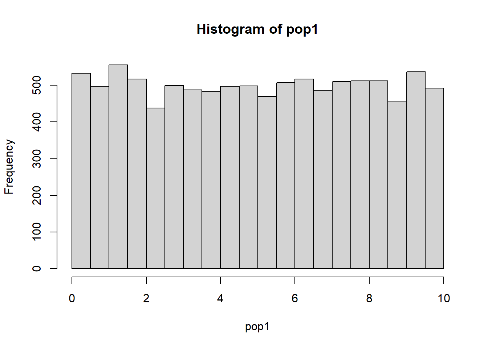
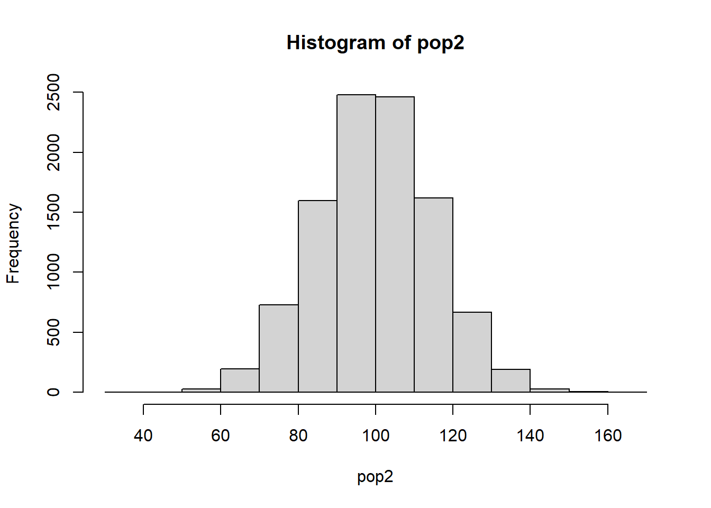
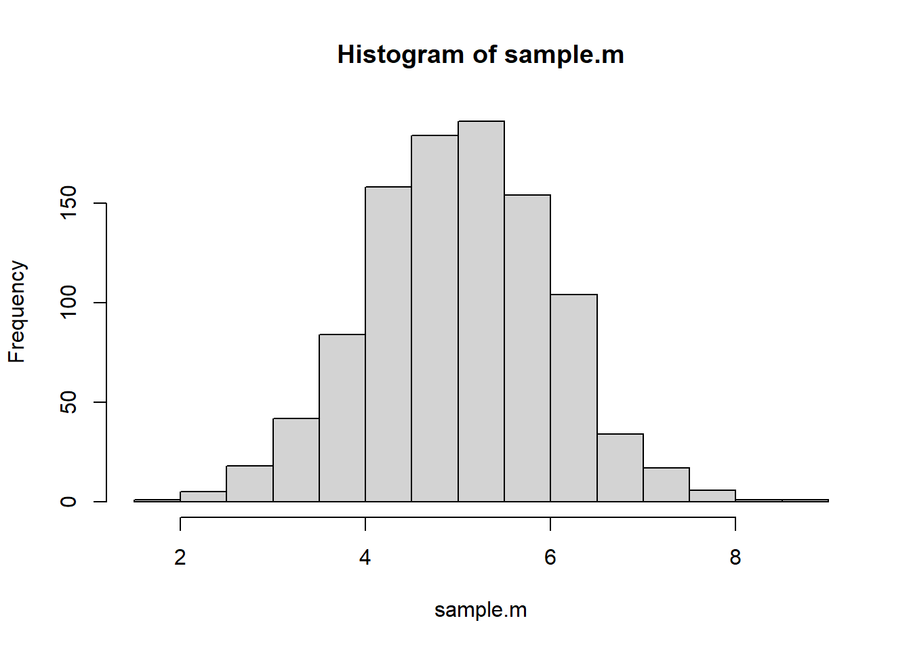

Chapter 5 正态分布
5.1 Z分数
Z分数被称为标准分数（Standard Score），它不与任何特定的测量单位关联，因此可以用于比较不同概率分布的数据。
Z分数的计算公式为：
\(Z = \frac{X-\mu}{\sigma}\)
因此，知道了Z分数、平均值（\(\mu\)）与标准差（\(\sigma\)），就可以反推出原始分数：
\(X = z*\sigma + \mu\)
5.1.1 Z分数的特性
Z分数的平均值为0，证明如下：
假设有一个数据集\(X_1, X_2, X_3\)。
\(\mu = \frac{X_1+X_22+X_23}{3}\)
\(\sigma = \sqrt\frac{(X_1-\mu)^2+(X_2-\mu)^2+(X_3-\mu)^2}{3}\)
\(X_1的Z分数为：Z_1 = \frac{X_1-\mu}{\sigma}\)
\(X_2的Z分数为：Z_2 = \frac{X_2-\mu}{\sigma}\)
\(X_3的Z分数为：Z_3 = \frac{X_3-\mu}{\sigma}\)
Z分数的平均值为：
\(\mu_Z = \frac{Z_1+Z_2+Z_3}{3} \\ \ \ \ \ \ = \frac{\frac{X_1-\mu}{\sigma}+\frac{X_2-\mu}{\sigma}+\frac{X_3-\mu}{\sigma}}{3} \\ \ \ \ \ \ = \frac{\frac{X_1+X_2+X_3-3\mu}{\sigma}}{3} \\ \ \ \ \ \ = \frac{\frac{3\mu-3\mu}{\sigma}}{3} \\ \ \ \ \ \ = 0\)
Z分数的标准差为：
\(\sigma_Z = \sqrt\frac{(Z_1-\mu_Z)^2+(Z_2-\mu_Z)^2+(Z_3-\mu_Z)^2}{3} \\ \ \ \ \ \ = \sqrt\frac{(Z_1-0)^2+(Z_2-0)^2+(Z_3-0)^2}{3} \\ \ \ \ \ \ = \sqrt\frac{Z_1^2 + Z_2^2+Z_3^2}{3} \\ \ \ \ \ \ = \sqrt\frac{(\frac{X_1-\mu}{\sigma})^2(\frac{X_2-\mu}{\sigma})^2(\frac{X_3-\mu}{\sigma})^2}{3} \\ \ \ \ \ \ = \sqrt{\frac{\frac{(X_1-\mu)^2(X_2-\mu)^2(X_3-\mu)^2}{\sigma^2}}{3}} \\ \ \ \ \ \ = \sqrt{\frac{\frac{3\sigma^2}{\sigma^2}}{3}} \\ \ \ \ \ \ = \sqrt{\frac{3}{3}} \\ \ \ \ \ \ = 1\)
5.1.3 计算Z分数
## [1] 9.1 9.4 2.9 8.3 6.4 5.2 7.4 1.3 6.6 7.1## [1] 6.37## [1] 2.605997## [1] 9.1## [1] 1.047584## [,1]
## [1,] 1.04758356
## [2,] 1.16270264
## [3,] -1.33154394
## [4,] 0.74059937
## [5,] 0.01151191
## [6,] -0.44896438
## [7,] 0.39524215
## [8,] -1.94551233
## [9,] 0.08825796
## [10,] 0.28012308
## attr(,"scaled:center")
## [1] 6.37
## attr(,"scaled:scale")
## [1] 2.605997## [1] -1.510836e-17## [1] 15.2 正态分布（Normal Distribution）
如果心理学家测量的所有变量都有相同的分布形态，那么不同的变量的同一个Z分数都将位于分布的相同位置，也就是说不同的变量便可以通过Z分数进行比较。
在概率分布中，最为人知且具有最方便的数学特性的是正态分布，许多心理现象都符合正态分布，如人的智商、反应时等。事实上，正态分布可以看成一个概率分布的家族，它的成员之间的差异表现在两个方面：平均值和标准差。
5.3 标准正态分布
简单地说，标准正态分布就是正态分布的Z分数的概率分布。
因此，任何正态分布都能通过Z分数转换成标准正态分布。
\(f(x) = \frac{1}{\sigma\sqrt{2\pi}}e^{-\frac{1}{2}(\frac{x-\mu}{\sigma})^2}\)
\(Z = \frac{x-\mu}{\sigma}\)
\(f(Z) = \frac{1}{\sqrt{2\pi}}e^{-\frac{1}{2}Z^2}\)
把图5.1中的\(\sigma\)去掉，就是Z分数的分布。
标准正态分布只有一种情况，即\(N(0, 1)\)，平均值为0，标准差为1的正态分布。其他正态分布都是标准正态分布的变形（见图5.3）。
正态分布的两端是没有尽头的。
5.4 概率与分布模拟
引用自：https://homepage.divms.uiowa.edu/~mbognar/applets/normal.html
## [1] 0.7475075## [1] 0.2524925## [1] 0.2524925## [1] 0.9772499## [1] 0.02275013## [1] 0.95449975.5 实际分布与正态分布
- 正态分布是一个完美的理论分布（根据数学理论构建的）。
- 根据Z分数来推断事件发的概率是基于正态分布的。
- 现实中，即使总体是无穷大的，心理学家研究的变量也不可能产生一个真正的正态分布（正态分布的两端是无限延伸的）。
- 不满足正态分布的数据转换成Z分数之后，也不会更接近正态分布（Z分数是线性转换，不会改变分布形态）。
- 实际中，数据只要满足近似正态分布即可（统计检验、看柱状图、看残差的分布）。
5.6 均值的抽样分布
如果我们研究咖啡对心率的影响，从人群中随机抽取25人，并测量其喝过咖啡后平均心率，此时的均值为：
- 样本均值（sample mean，\(\bar{X}\)）
我们重复以上过程许多次，会得到的许多个样本均值，这些样本均值也会形成一个分布:
- 抽样分布（sampling distribution），更准确地说叫做均值的抽样分布（sampling distribution of the mean）。
当样本均值趋向无穷多个的话，其分布是一个正态分布。
5.7 中心极限定理（Central Limit Theorem）
严格说来，只有当总体分布是正态的，均值的抽样分布才会严格遵循正态分布。
实际中，总体均不会完美呈现正态分布。
中心极限定理：即使不遵循正态分布的总体，只要样本量足够大，则均值的抽样分布即可被认为是正态的。
正是由于中心极限定理，心理学家不用太担心所研究的变量的总体分布形态，而且推理过程也大大简化了。
中心极限定理：
对于任何一个均值为𝜇和一个有限方差为\(\sigma^2\)的总体，当样本大小 n趋向无穷大时，样本均值（每一个样本均是n次独立观测）的分布将接近一个均值为𝜇和方差为\(\sigma^2/n\)的正态分布。
5.7.1 均值抽样、标准误和中心极限定理


## [1] 3.7904543 6.6452962 2.5548023 0.8009692 7.1677773 4.3767272 8.4932047
## [8] 7.0390221 5.7347590#从总体中抽取1000次样本量为n的样本
sample.m <- c()
n <- 9
for (i in 1:1000) {
sample <- sample(pop1, 9, replace=F)
sample.m <- c(sample.m, mean(sample))
}
#画均值的抽样分布（根据中心极限定理，接近正态分布）
hist(sample.m)